A $1.7M loss, turned into $430M.
There was no retail product when I joined, only a thesis that wasn’t landing. A design-led initiative took it from MVP to tested app to an independent brand my team created: Aspero. From a $1.7M loss in FY23 to $430M in FY25.
Aspero is the story this whole portfolio keeps returning to: design leading a business, not decorating one. This page now carries the full account, the users and their fears, the MVP that earned the app, the version that earned the brand, and a screen-by-screen tour of the product that turned a written-off thesis into $430M of volume. Start at the situation, or jump straight to the tour from the rail.
The market thesis was real and enormous: a ₹226 trillion bond market with under 5% retail participation, while 53% of India’s household financial assets sat parked in fixed deposits. The barrier was never money. It was fear, complexity, and low trust in financial platforms. Yubi’s fixed income business had genuine B2B heritage serving wealth distributors and advisors, but the retail attempt, then carrying the Yubi Bonds name, wasn’t landing. FY23 closed at a $1.7M loss, and internally the appetite for another try was thin.
This is the moment most companies hand to a product team with a backlog. Yubi handed it to design. Not to redesign an app, because there was no app worth redesigning, but to find out whether a retail fixed income business could exist at all, and what it would have to feel like.
We refused to build the full product on an unproven thesis. The working hypothesis was written on the wall: if we simplify financial complexity and make safety feel visible, users will trust enough to act. Everything else became a test of that sentence.
The evidence base came first: 200 surveys across Tier 1 to 3 users, 80+ in-depth interviews across two age cohorts, five expert sessions with financial advisors, ethnography in Tier 2 markets, usability tests, and Amplitude funnel analysis. The findings were sharp: 62% of users couldn’t define “yield”, 42% dropped at the PAN step out of data-misuse fear, and 68% preferred FD safety, summed up by one interviewee: FDs feel like a promise, bonds feel like a gamble. Each finding mapped to a behavioural principle, loss aversion to security cues, trust heuristics to familiar palettes and known issuer logos, framing to plain language, overload to curated lists.
The biggest kill was the hardest one: the umbrella brand itself. The hypotheses kept converging on the same finding, retail investors would not extend trust to a name built for institutional lending. The product didn’t need a better interface. It needed its own identity.
The zero-to-one phase ran on a deliberately small pod: three designers, one researcher, and one content strategist, run as a single unit across what would normally be three departments. My team created the Aspero brand end to end: the name, the identity, the voice, all built around calm and certainty instead of fintech noise. As the platform scaled, so did the squad, to 14 across product, motion, and system design, with DesignOps practices (async design reviews, sprint retrospectives) lifting delivery velocity by 60%.
The operating rhythm was executive by design: weekly reviews with the CEO, CFO, and CPO on hypotheses and business metrics, never mockups. And the team itself became an outcome: 95% designer retention against an industry average of 72%, and four promotions earned along the way.
The research (200 surveys, 80+ interviews, two age cohorts, Tier 1 to Tier 3) kept sorting India's savers into a handful of postures toward money. These are the cohorts the product serves, and the reason it serves three business models at once.
Amplitude gave us the where; interviews gave us the why. Mapping the funnel's leaks against the research produced a short, brutal list, and every one of them became a named design intervention. This table is effectively the product backlog that built Aspero.
We shipped the MVP before the app: a deliberately narrow web product that existed to test the trust hypothesis with real money, not to be complete. Curated inventory instead of a catalogue, the comparison widget instead of a learning centre, a thinned KYC instead of the full stack. Three iterations in six months, each one killing or confirming an assumption about audience, positioning, ticket sizes, and trust language.
It worked, measurably: conversion rose 61% and onboarding time fell 35% across the iterations, which is what unlocked funding for the full application. Just as importantly, the MVP retired the wrong direction, the data showed the Yubi Bonds name itself suppressing trust, which set up the brand decision that came next.
Version 1 was where the validated thesis became a product with a name of its own. Aspero launched in October 2023 as an independent brand, and the app shipped the four signature solutions the research had demanded: the Yield Visualizer that plays returns out over time, the FD vs bond comparison widget, micro-step KYC cut from 11 steps to 5, and the predictable-return dashboard that replaces uncertainty with a schedule.
The same release carried the platform strategy: B2C for retail investors, B2B for wealth partners, and B2B2C rails for platform partners, three doors into one inventory and one trust system. Every screen in the tour below is a Version 1 surface or its direct descendant.
The vision we kept steering by: move a meaningful share of India's FD-parked household savings into transparent, predictable fixed income, without ever betraying the safety instinct that put the money there. That reframes every metric. The first purchase only proves curiosity. The north star metric is the trusted repeat, the second investment, made without a phone call, because the first one behaved exactly as the screen promised.
Chasing it reshaped the roadmap in a specific order: first make understanding effortless (comparison, calculator, plain language), then make commitment safe (micro-KYC, schedules before money moves), then make ownership rewarding (portfolio, payout calendars, reinvestment), and finally make the rails serve partners so the same trust compounds across B2B and B2B2C. Retention moving from 31% to 45% is that loop starting to turn.
The research said it plainly: the enemy wasn’t ignorance, it was anxiety. Every mechanism below exists to convert one specific fear into one specific moment of confidence.
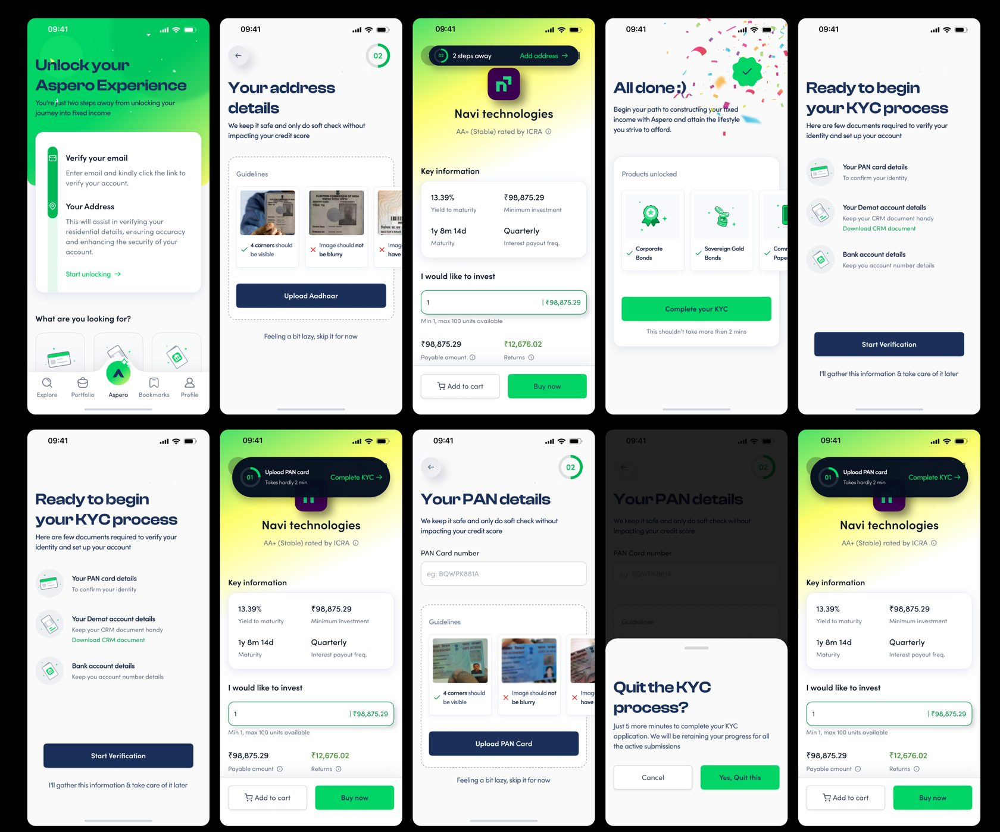
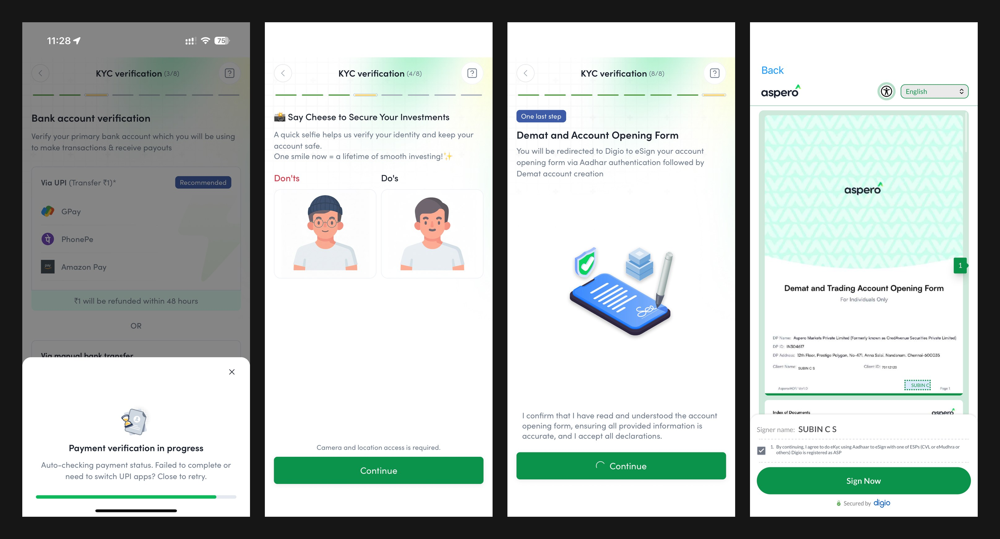
The full before-and-after of this flow, the 120-screen legacy KYC against the guided rebuild, has its own deep-dive case study.
The home screen carries the entire trust argument in one glance. The highest-conviction opportunity leads with its yield, rating, and tenure in plain sight; curated shelves replace the catalogue; and the trust markers, SEBI registration, known issuer logos, sit exactly where an anxious eye goes looking for a reason to leave. The job of this screen is not engagement. It is to make the first good decision feel obvious and the platform feel accountable.
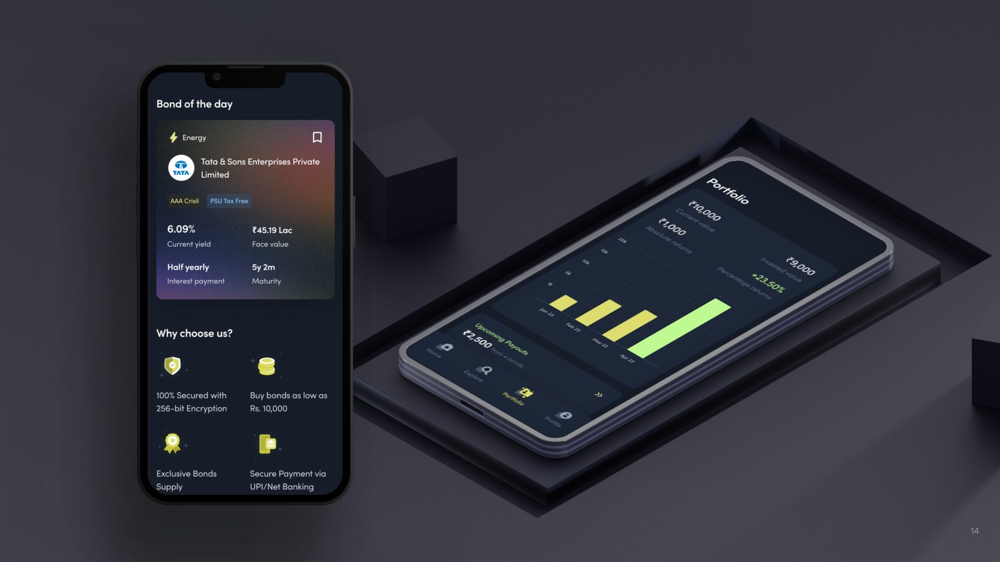
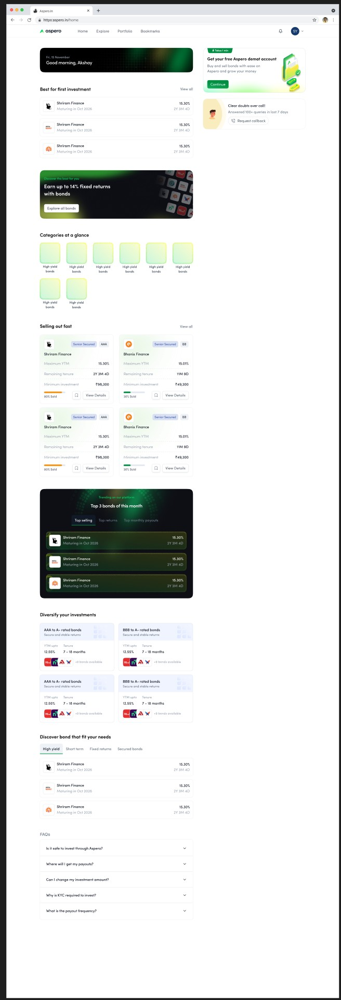
Comparison is Aspero's native language, because it is the anxious investor's native language. The FD vs bond widget puts any instrument next to the fixed deposit the user already believes in, live, and lets the difference argue for itself. Side-by-side bond comparison holds yield, tenure, rating, and payout frequency in a single frame, so choosing between instruments stops being thirty open tabs and becomes one legible decision.
BondBasket flips the catalogue on its head: instead of asking which of thirty instruments you understand, it asks what you are building, a child's education, a home, a calmer retirement, and assembles the basket around that goal and your risk temperament. Mental accounting makes a named goal stickier than any yield figure, and visible progress toward it keeps completion bias working for the user. It is the single most direct translation of the research into a product surface.
The purchase flow is engineered around the final-commit fear the funnel exposed at payment. Before a rupee moves, the user sees the full cashflow schedule, exactly what comes back, when, and what it sums to, so the commitment is to a visible plan rather than a promise. Ticket sizes stay accessible, the demat and payment steps ride the same micro-step pattern as KYC, and the confirmation reads back the schedule, not a transaction ID.
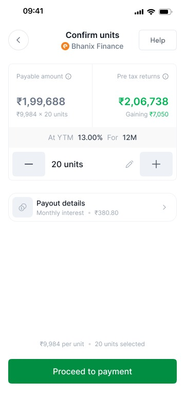
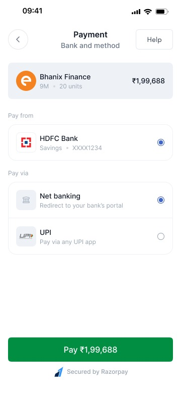
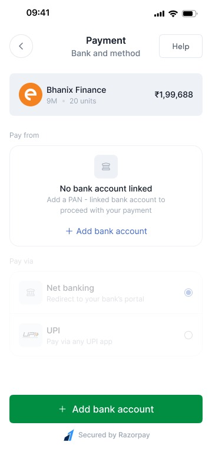
For the 62% who could not define yield, the answer was never a glossary. The calculator lets a user play their own number across tenures and watch the return build, pre-tax, in rupees, on a timeline, which teaches yield better than any definition could. It doubles as the Yield Visualizer inside evaluation flows, so the same mental model, money in, schedule out, follows the user from curiosity to commitment.
The portfolio is where the north star lives or dies, because it is the screen that decides whether there is a second investment. The predictable-return dashboard shows holdings as a stream of dated payouts rather than a fluctuating number, upcoming interest on a calendar, principal returning on known dates, everything summing to a plan. It is deliberately the least exciting screen in the app: certainty, performing itself every time the user checks.
Selling closes the same loop with the same manners: a sell request that quotes the price and settlement plainly, and an orders view where buys and sells sit in one auditable list. Liquidity, the thing FD loyalists quietly feared losing, is a visible two-tap path out.
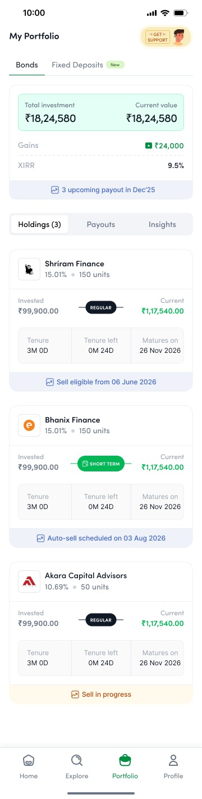
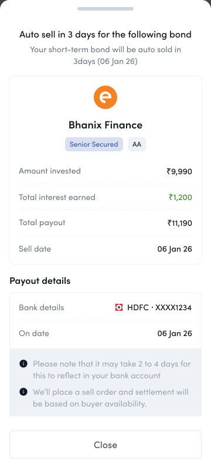
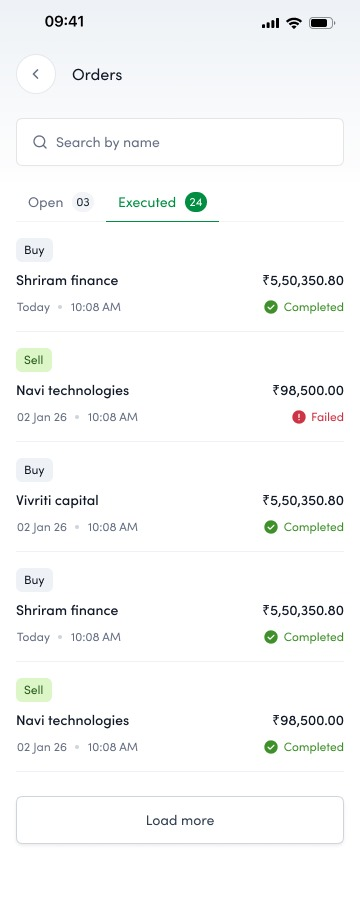
The details screen is built for the diversifier's cross-examination and the loyalist's fear in the same layout: the repayment schedule sheet up top, risk appetite meters tied to the credit rating, issuer information with names people recognise, and the SEBI-registered trust block anchoring the page. Yield, tenure, payout frequency, and taxation in plain language, with the schedule always one tap from the calculator.
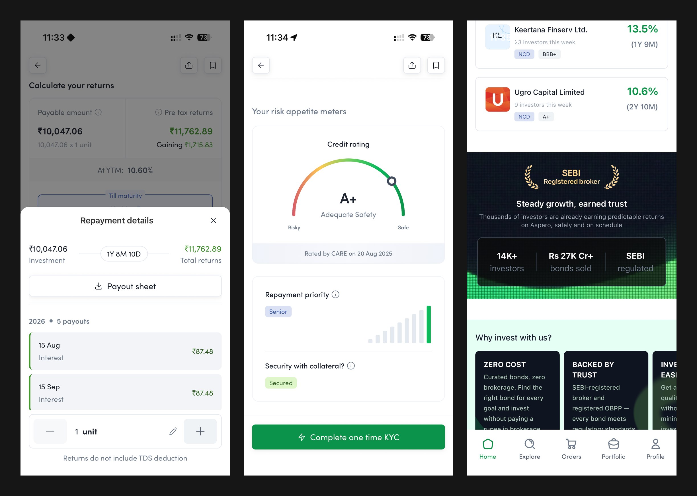
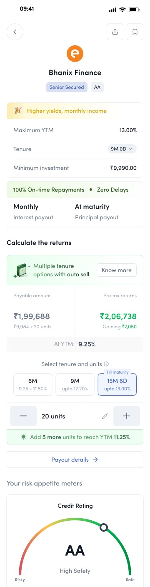
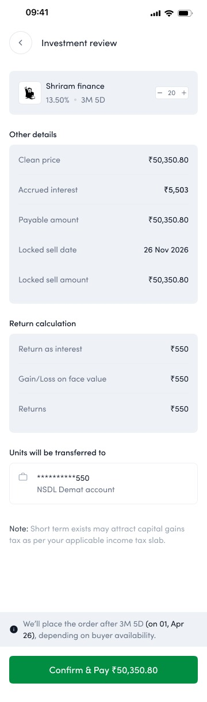
Amortising and callable instruments return principal ahead of schedule, and to an FD-trained mind an early credit reads as something gone wrong. The prepayment experience treats that moment as a trust event: the payout is announced in plain language, the repayment schedule redraws itself to show what changed and what remains, and the freed principal is met with a next step, reinvest it, rather than a dead end. Handled well, the scariest surprise in fixed income becomes proof that the platform is watching the money as closely as the user is.
Curation gets a first-timer moving, but the diversifier eventually wants the whole shelf. The directory is the complete, filterable inventory, by rating, yield band, tenure, payout frequency, and issuer, with the same plain-language cards as everywhere else, so depth never costs legibility. It also serves the B2B side: the same structured inventory that powers a retail browse powers a wealth partner screening instruments for a client book.
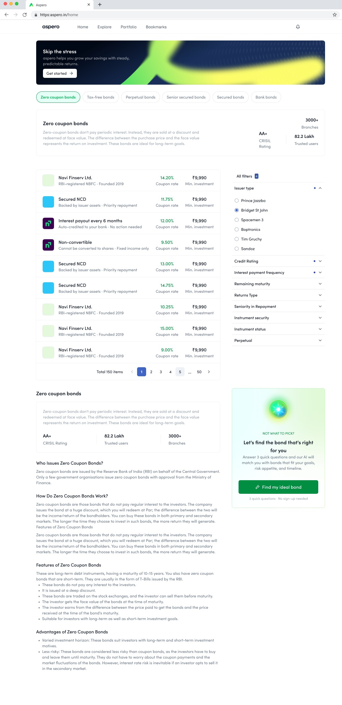
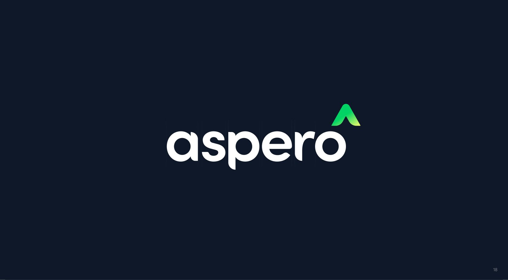
My team named the gradient Firefly: growth green rising into optimistic yellow, over a deep ink neutral. The ascending mark reads as a peak, a roof, and an upward arrow at once. Familiar enough to feel safe, fresh enough to feel nothing like an institutional lender, which was precisely the point.
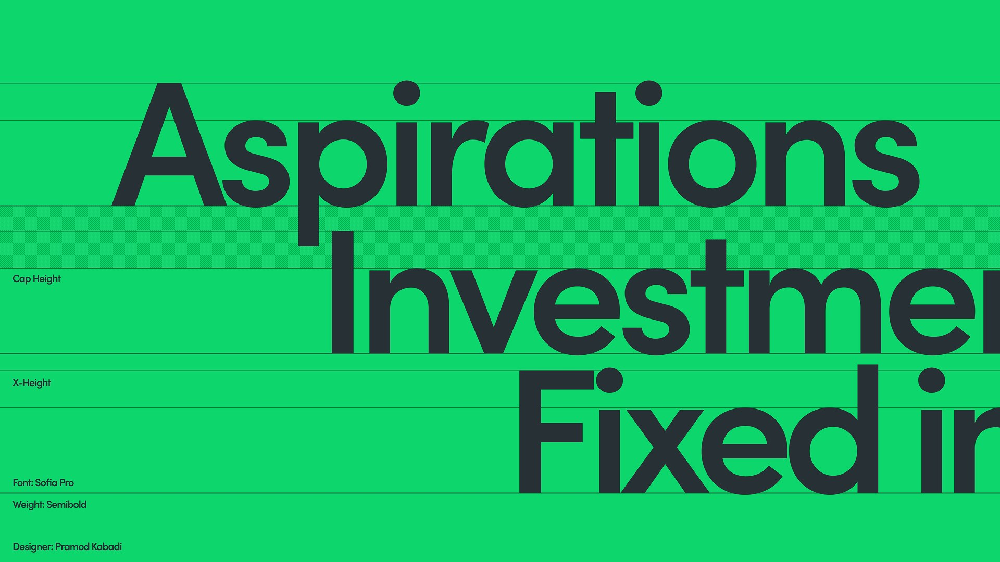
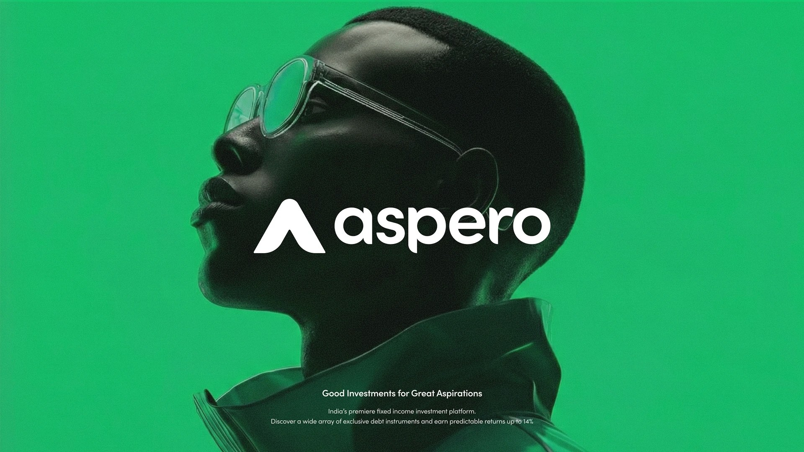
FY23 closed at a $1.7M loss under the old direction. FY25 closed at $430M, with 20,000+ active investors on a platform that started with fewer than 300, an average order value of ₹68,000, and 32% of Yubi’s revenue contributed along the way. Aspero launched as an independent brand in October 2023 and now stands as its own SEBI-registered platform.
Aspero settled two convictions. First, design can lead a zero to one, not just polish one, if it is accountable to business hypotheses rather than screens. Second, trust is not a coat of paint. Sometimes the most important design decision is the name on the door.